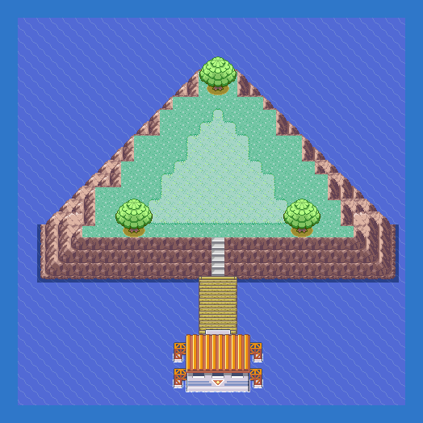

Birth Island Exterior
TIP
No wild Pokémon in the grass here. Time of day: M = morning (6–10), D = day (10–19), E = evening (19–20), N = night (20–6).
Event 1: Deoxys
Level 30. The triangle rock moves every time you press A on it, and you must reach its new spot by the shortest route: take even one step too many and it slides back to the centre with a buzz, so count your steps and never backtrack. Turning on the spot is free. Do exactly this:

CAUTION
Eleven presses in total. If the rock returns to the middle of the island you took too many steps on that leg; start again from step 1.Event 2: Puzzle solution
1. Stand directly below the triangle in the centre of the island, face up, press A.
2. Walk 3 left and 1 down, face left, A.
3. Walk 3 right and 5 up, face up, A.
4. Walk 3 right and 5 down, face right, A.
5. Walk 5 left and 3 up, face left, A.
6. Walk 4 right, face right, A.
7. Walk 2 left and 2 down, face down, A.
8. Walk 3 left and 1 down, face left, A.
9. Walk 6 right, face right, A.
10. Walk 3 left, face down, A.
11. Walk 3 up, face up, A. The rock shatters and Deoxys comes down to you. Save before the last press.